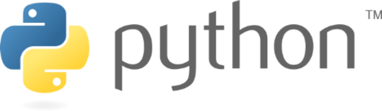
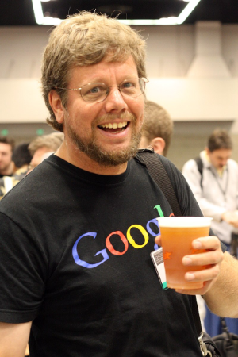
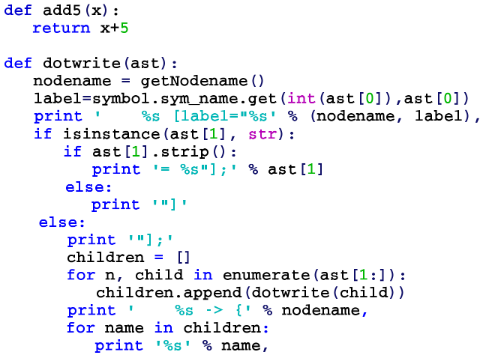
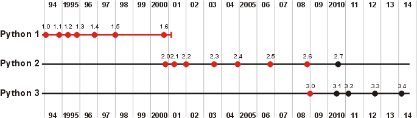
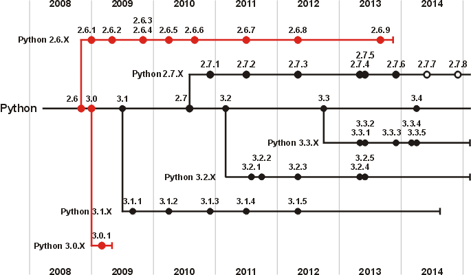

Python es un lenguaje de programación ampliamente utilizado en las aplicaciones web, el desarrollo de software, la ciencia de datos y el machine learning (ML). Los desarrolladores utilizan Python porque es eficiente y fácil de aprender, además de que se puede ejecutar en muchas plataformas diferentes. El software Python se puede descargar gratis, se integra bien a todos los tipos de sistemas y aumenta la velocidad del desarrollo.
Se utiliza para desarrollar aplicaciones de todo tipo, por ejemplo: Instagram, Netflix, Spotify, Panda3D, entre otros.
Puedes descargarlo desde su página oficial haciendo clic aquí ==> ¡Programa en Python :)!
Guido Van Rossum, un programador de computación de los Países Bajos, creó Python. Python comenzó en 1989 en el Centrum Wiskunde & Informatica (CWI), en principio como un proyecto de afición para mantenerse ocupado durante las vaca ciones de Navidad.
Es la primera persona en obtener el título BDFL (Benevolent Dictator for Life), cuyo título es otorgado a personajes importantes en el mundo del código abierto, teniendo asignada la tarea de fijar las directrices sobre la evolución de Python, así como la de tomar decisiones finales sobre el lenguaje que todos los desarrolladores acatan. Van Rossum tiene fama de ser bastante conservador, realizando pocos cambios al lenguaje entre versiones sucesivas, intentando mantener siempre la compatibilidad con versiones anteriores. El 12 de julio de 2018, con un mensaje enviado a la lista de python-committers, anunció su retiro de los procesos de decisión.
Ganó el premio Free Software Awards en el 2001
Redes sociales: Instagram Twitter
Aquí se puede apreciar la una parte de la sintaxis del código de Python
Fechas de publicación
- Comienzo de la implementación - December, 1989
- Publicación interna en CWI - 1990
- Python 0.9.0 - 20 de febrero de 1991
- Python 1.0 - enero de 1994
- Python 2.0 - 16 de octubre de 2000
- Python 3.0 - 3 de diciembre de 2008
- Python 3.1 - 27 de junio de 2009
- Python 3.2 - 20 de febrero de 2011
- Python 3.3 - 29 de septiembre de 2012
- Python 3.4 - 16 de marzo de 2014
- Python 3.5 - 8 de febrero de 2015
- Python 3.6 - 23 de diciembre de 2016
- Python 3.7 - 12 de junio de 2018
- Python 3.8 - 14 de octubre de 2019
- Python 3.9 - 5 de octubre de 2020
- Python 3.12 - 2 de octubre de 2023
 